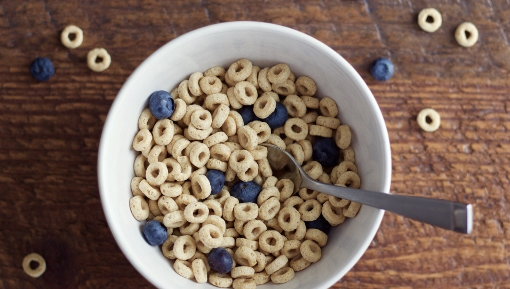

Trail Mix

Ingredients
- 1 cup cereal of your choosing
- 1/4 cup frozen berries
- 1/2 cup milk
Instructions
- Take out all the ingredients, a big bowl, and spoon
- Add the cereal and frozen berries to the bowl
- Pour the milk over top
- Enjoy the cereal! Perhaps even take it outside and eat in the sun!